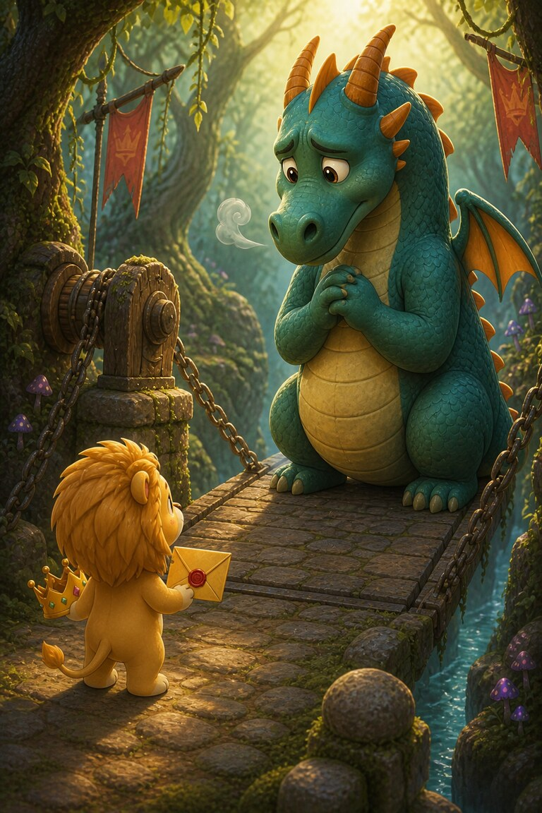
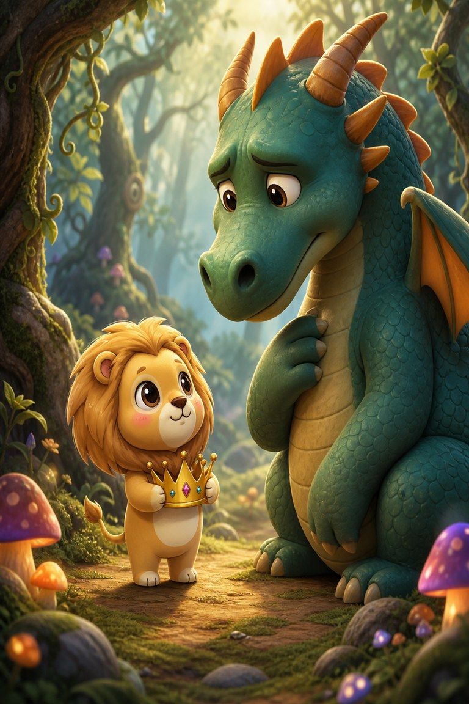
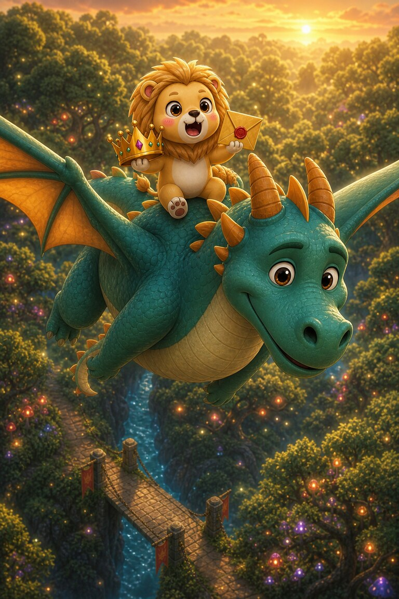

Page 1 of 4
Lionnaise carries a golden invitation through the enchanted forest. Beyond the bridge, the feast is waiting. She practises a mighty roar, but it comes out as a squeak.
A four-page fairy-tale adventure in which the bravest thing Lionnaise does is ask a kind question.
Lionnaise carries a golden invitation through the enchanted forest. Beyond the bridge, the feast is waiting. She practises a mighty roar, but it comes out as a squeak.

A dragon stands across the bridge. Lionnaise stops. He could frighten anyone away, yet his claws twist together and a tiny puff of smoke escapes his nose. He looks worried too.

Lionnaise holds her crown against her chest and looks up. “Would you like to come to the feast?” she asks. The dragon blinks. “Me? Nobody has asked me before.”

The dragon smiles and opens the way across. Then he offers Lionnaise a ride above the trees. She holds the invitation tight. “Shall we go in together?” she asks. There is no need for a roar.
Lionnaise invited him to the feast. Nobody had ever asked the dragon before. Her kind question showed she saw a worried friend, not a monster.
SnackPack Sentences & Spelling has many more short reads like this one, plus the Reading Trail, word packs and literacy games.
Next storyPolly Roger’s Pirate Cove
Know a family or class who would enjoy it?